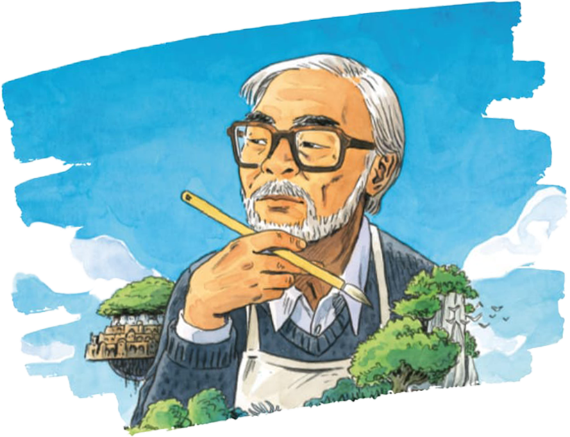

Хаяо Миядзаки

Хая́о Миядза́ки — японский режиссёр-аниматор. Вместе
с Исао Такахатой основал анимационную студию Studio
на которой выпущено большинство его фильмов.
Миядзаки чаще всего работал в жанрах фэнтези,
детской сказки, стимпанка и магического реализма
1984 — «Навсикая из долины ветров»
1986 — «Небесный замок Лапута»
1988 — «Мой сосед Тоторо»
1989 — «Ведьмина служба доставки»
1992 — «Порко Россо»
1997 — «Принцесса Мононоке»
2001 — «Унесенные призраками»
2004 — «Ходячий замок»
2008 — «Рыбка Поньо на утесе»
2013 — «Ветер крепчает»
2018 — «Гусеница Боро»
2023 — «Как вы поживаете?»